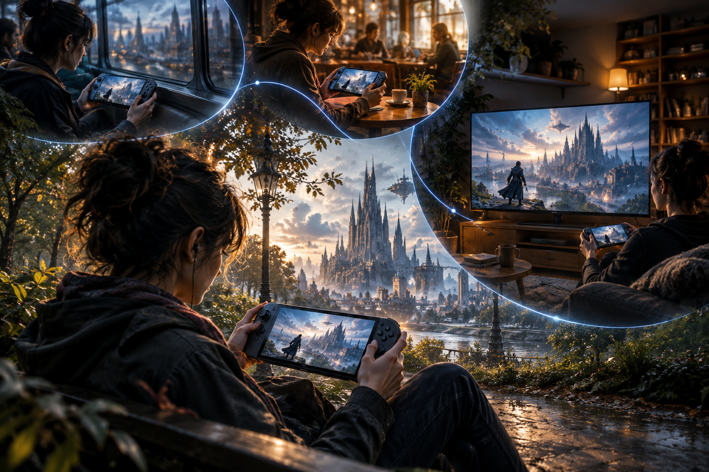
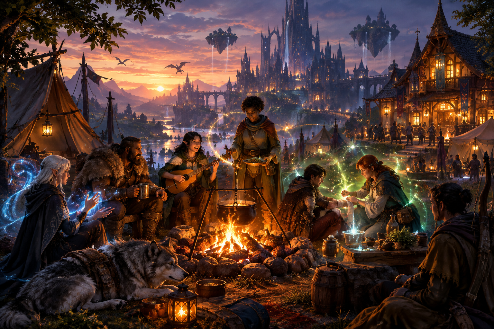
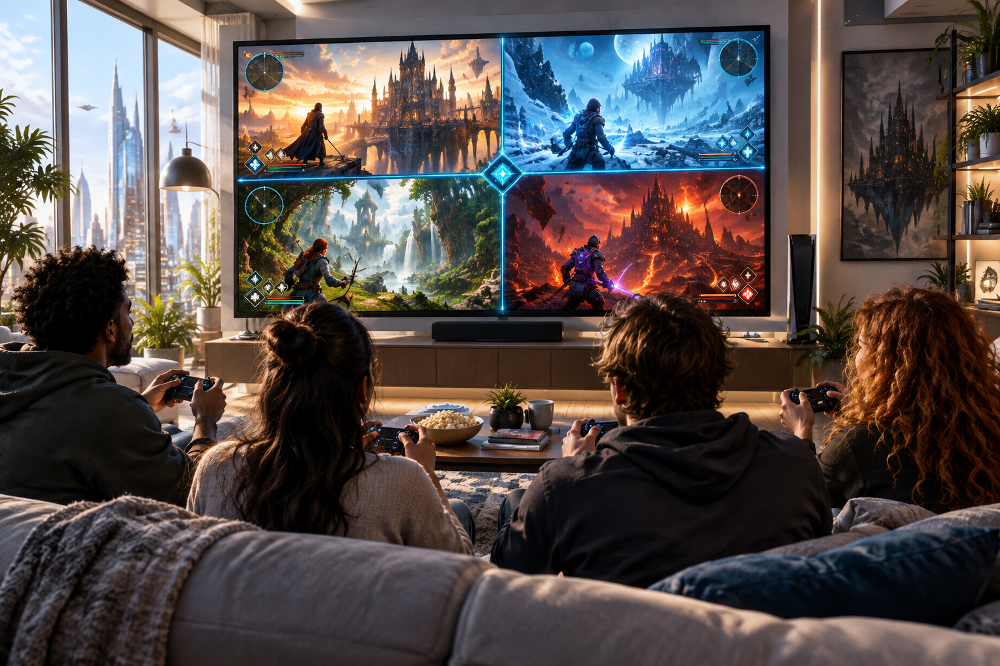

Trust, Play, and the Machine: How AI-Generated Content Is Redefining Community and Credibility in Gaming Culture
As AI-generated content embeds itself in games and their communities, players face new questions about trust, creativity, and authenticity. How are expectations, boundaries, and the sense of 'realness' evolving in an era when human and machine creation blend beyond recognition?
READ THE STORY ↗
The Rise of Handheld Gaming PCs: Portability Without Compromise in 2026
In 2026, handheld gaming PCs have moved from experimental gadgets to driving forces shaping how — and where — PC games are played. This feature explores why these portable powerhouses are suddenly everywhere, how they're redefining the PC gaming experience, and what their mainstreaming means for gamers and developers alike.
READ THE STORY ↗
Beyond the Pause Screen: The Evolution of Rest and Recovery Systems in MMORPGs
In 2026, MMORPGs are redefining what it means to take a break, heal, and regroup—crafting dynamic new systems for rest, downtime, and strategic recovery that enhance immersion and community.
READ THE STORY ↗
A Symphony of Swords and Strings: The Unsung Power of Music Systems in Modern RPGs
From dynamic soundtracks that adapt to player choices to interactive instruments woven into gameplay, RPGs in 2026 are empowering players with music that is more than background flavor—it's a core part of storytelling, immersion, and even combat.
READ THE STORY ↗
Behind the Split: How Developers Are Reviving Split-Screen Co-Op on Modern Consoles
The challenges and breakthroughs powering the return of split-screen multiplayer—and why these advances are shaping the future of console co-op in ways beyond nostalgia.
READ THE STORY ↗